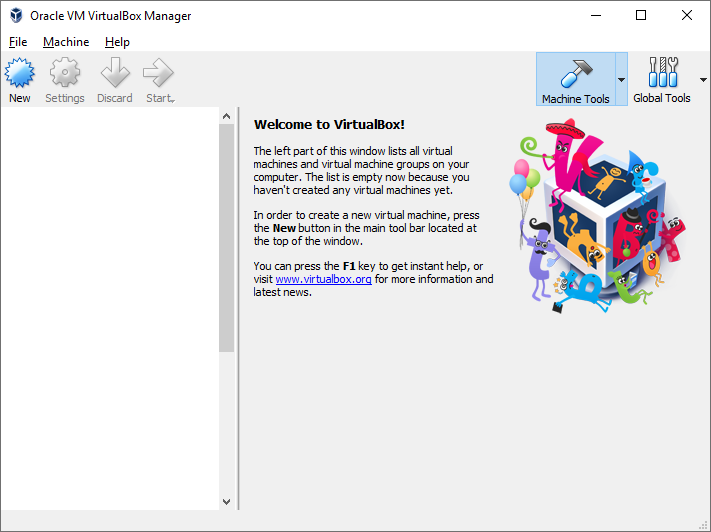
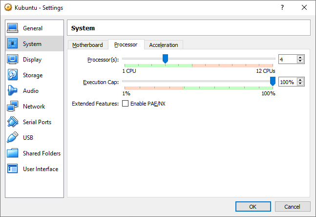

Unlock the hidden capabilities of your Xiaomi Mi Router: Padavan installation guide
You've just got your new Xiaomi router out of the box, plugged everything in, powered the router on, opened the router's web interface and got ready to set it up, and... everything is in Chinese with no way to change the language? You need an app on a mobile device just to perform the initial setup?
You've managed to configure the internet access, but now you need to change some settings. With some guesswork or a translator, you've got through the web interface, found settings that you were searching for, and... the router needs to reboot just to change that setting.
After a couple of reboots and fumbling around the UI you have finally configured the router the way you need it to be, but there's something missing. There is a USB port, but you can't find a setting to share files over the network from USB drives? You can't turn on VPN, download torrents or host servers on the router, even though the hardware inside is more than capable?
You may be left a bit disappointed with your new device. Fortunately, there is a way to fix all these problems.
What is Padavan firmware?
Padavan is an open-source custom firmware originally made by Andy Padavan for ASUS routers. This firmware was created to get maximum features and performance from MediaTek SoCs, the same ones that power Xiaomi routers.
Why should I install Padavan?
- Very fast, intuitive and customizable web interface in English instead of Chinese
- Privacy - Padavan firmware is open-source
- Unlike the official firmware, most setting changes don't require a reboot
- USB applications: FTP server, Torrent client (Transmission), SMB Server, UPnP/DLNA Media Server, iTunes Media Server (Firefly)
- Padavan includes VPN server and client
- You can enable SSH or telnet access to the router
- Padavan supports Entware packages so you can install additional applications
Okay, so how do I install it?
First, you'll need to get SSH access to your router, for that you'll download and flash a developer version of the official firmware, and download and install official SSH toolkit. Then, if you aren't already using Linux, you'll need to set up a Linux virtual machine, and from there, download and run a script to build and flash the Padavan firmware image for your router.
If that seems complicated to you - don't worry! This is actually quite simple, and I will guide you through every step.
Requirements:
- Your Xiaomi Mi Router 3G/3C/3/Mini
- Internet connection
- A PC or a laptop connected to your router
- An Android or iOS device for linking router to your Mi account
- A USB flash drive
- A needle, toothpick, or a SIM tray removal tool
We are using a Xiaomi Mi Router 3G in this guide, but you can still follow this guide if you have another supported model, instructions for your router should be the same.
Installation steps:
- Download and flash developer ROM
- Download the SSH toolkit
- Get SSH access
- Set up a Linux Virtual Machine
- Build and flash Padavan
Download and flash developer ROM
Our first step is to download and flash an official developer firmware ROM image from Xiaomi. You can download it from the Xiaomi site by clicking on this link.
{kind=link}
Go to the ROM section by clicking on the ROM button on the top and then scroll down until you find links for your router, in our case, we are looking for a "ROM for R3G" string.

Download the developer ROM image by clicking on the blue button in the right column.
Once it finishes downloading, go to your router's web interface and enter your login and password.
{kind=link}
Now we are going to flash the new ROM onto the router. Click on the third link from in the top bar of the router's web interface, then click on the round yellow button with an "i" letter on the right, and finally, click on the gray button below the colored buttons.
{kind=link}
Here, click on the Choose file button and pick the ROM image that you have just downloaded. After that, click on the blue button.
{kind=link}
You will be presented with a checkbox and a warning. The warning tells you that version of the ROM you're trying to flash is older than the current one installed on your router and advises you to reset your router's settings after flashing - tick the checkbox and this will be done automatically. After that, click on the blue button to launch the flashing process.
Notice that the front LED on your router turns orange - after a couple of minutes, it will turn blue again. That would mean that the ROM image flashed successfully, and we are ready to take our next step.
Download the SSH toolkit
Our second step is to get SSH access to the router. To do that, first perform basic router setup with your method of choice, just like you did when you initially configured the router after you bought it. To do that, install an app for your Android or iOS device, open it, log in to your Mi account and follow on-screen instructions when prompted to configure a new router.
Once you've configured your router and gained Internet access, you need to download and flash the SSH toolkit from Xiaomi. Follow this link and log in with the same Mi account that you used to set up your router.
{kind=link}
You should see a page with a login and a password for connecting to your router via SSH and a button for downloading the SSH toolkit. Write your SSH login and password down! You will need them soon.
{kind=link}
If your browser is not able to connect to the page, check the address bar. The address should begin with "https://", correct it if needed.
{kind=link}
Click on the download button. You'll get a warning about opening root access to your router via SSH. Click on the right button and the SSH toolkit file should start downloading. Once again, if your browser isn't able to connect when trying to download the file, check if you have the "https://" in the address bar.
Get SSH access
The next step is to get the SSH toolkit file that you've just downloaded onto the router. Plug your USB flash drive into your PC and format it to FAT32, copy the SSH toolkit on it, then unplug it from the PC.
Here goes the tricky part: unplug the power cord from your router, plug in the USB flash drive with the SSH toolkit on it, press and hold the pin-hole reset button on the back of the router with a needle, toothpick, or a SIM tray removal tool, and, while holding the reset button, plug in the power cord. The front LED on the router should turn orange, and when it starts blinking, you can let go of the reset button.
When the front LED turns back to blue once again, you're ready for the next step. For that, we'll need a working Linux environment. If you're already using Linux, you can skip the next step and go straight to Build and flash Padavan. If you're on Windows or Mac, continue with the next step.
Set up a Linux Virtual Machine
For our Linux Virtual Machine, in this guide, we'll use a user-friendly distro called Kubuntu, but you can use any Debian-based distribution. Follow this link and download Kubuntu 18.04.2 LTS image, 64-bit or 32-bit, depending on your system.
To create a virtual machine, we'll use VirtualBox 5.2, which is supported on both 64-bit and 32-bit machines, but you can use other virtualization tools, like VMware Workstation Player, if you like.
Download the latest VirtualBox 5.2 release for your operating system from here and install it using default options. After the installation process is finished, start VirtualBox.
{kind=link}
You should see a VirtualBox Manager window pop up. Click on the New button.
{kind=link}
In the opened window specify a name for your new VM, select Linux for Type, Ubuntu (64-bit) or Ubuntu (32-bit) for Version, depending on the version that you've downloaded, and click Next.
{kind=link}
Select the amount of memory that you can allocate to the VM (more memory = better), and click Next.
{kind=link}
Select Create a virtual hard disk now, and click Next.
{kind=link}
Select VDI, and click Next.
{kind=link}
Select Create a virtual hard disk now, and click Next.
{kind=link}
Select the amount of hard disk space that you can allocate to the VM. Default 10 GB isn't enough space for us, so you should change it to something like 18 GB, and click Create.
{kind=link}
Now, you should once again be in the main VirtualBox Manager window with your newly created VM in the list. Click on the Settings button.
{kind=link}
Go to the System section and click on the Processor tab. Here you should probably increase the number of processor cores available to the VM because more cores available to the VM means more performance, and more performance means less time spent on waiting until the script on our VM finishes building the Padavan firmware. When you're done, click on the OK button.
Now we can finally start our VM. Press the Start button.
{kind=link}
You will be asked to select a start-up disk for your VM. This is the disk that your VM will boot from and from which you are going to install Linux onto your VM. Here you should select the Kubuntu image that you have downloaded earlier and click on the Start button.
{kind=link}
If all goes well, you should see this screen soon. This means that we are finally in Linux! Now we should install it onto our VM. Select Install Kubuntu and follow the on-screen instructions, mostly using the default options, until you're asked whether you want a Normal or a Minimal installation.
{kind=link}
We don't need a lot of applications on our VM, so just choose Minimal installation to save space on your hard drive. Continue on with the installation process, using the default options.
{kind=link}
Soon enough, you will be asked to pick a username and a password. You are going to need this password, so don't forget it. Continue following the on-screen instructions.
{kind=link}
After you've gone through the installation process and Kubuntu has finished installing itself, you're going to see this screen. Just press the Restart Now button and your VM will restart itself.
{kind=link}
After your VM restarts, you'll see this screen. Enter your password and click on the Login button.
{kind=link}
By now you should be on your VM's desktop. Click on the menu button (which looks like a letter K) at the bottom left corner and select Konsole to launch a terminal emulator. We will use it to download and launch a script called Prometheus.
Build and flash Padavan
Now it's time to actually get Padavan. To do that, we will use Prometheus to build Padavan image from the source code.
{kind=link}
Type these three commands into the Konsole window to download and launch Prometheus:
wget -O start.sh http://prometheus.freize.net/script/start-99.sh
chmod +x start.sh
./start.sh
{kind=link}
You will be asked to type in your Linux account password. Type it in and press Enter to continue.
{kind=link}
Here, you'll be asked to choose a repository, but there's really only one choice: Linaro's repository, which is a more up-to-date fork of the original Padavan (which isn't even supported by the script anymore). So, just type in 1. You'll get a warning, and after that, you'll have to choose a repository once again, just do the same thing that you just did.
Now, the script is going to download and install all the files that it needs to build your new router firmware, so just wait a little bit. You're going to just wait until the script finishes its job a few more times soon so it may be a good time to grab a cup of tea and put on some relaxing music.
{kind=link}
The script will load a list of all available configurations for different devices. Just type in 2 for Xiaomi and press Enter.
{kind=link}
Here, choose your router model, in our case we're entering 7 for Mi Router 3G.
{kind=link}
And here is the Prometheus main menu. At this step, we need to do three things: build a toolchain, build Padavan and flash Padavan. Let's start: press 3 and the script will start building the toolchain. It'll take some time, from a couple of minutes to an hour, or maybe more if you're on a very old machine: it depends on how powerful your PC is. Did you make yourself some tea?
When it's done, you should see a Toolchain: OK line on your screen. If anything goes wrong, you'll see an error message on your screen, but if you've followed this guide closely, everything should be fine.
Now it's time to build the firmware. Press 4 to go into the Firmware menu.
{kind=link}
Here, you can go and add some skins to your firmware, if you would like to customize the appearance of your router's web interface. To do that, press 2 and the skins selection menu should appear. This is completely optional.
After that, press 3 to start building the firmware. Once again, the script will do the job by itself, you'll just chill for some time. This will also take from a couple of minutes to a couple of hours, depending on your hardware.
{kind=link}
When the script almost finishes building Padavan, it will ask you for your Linux password once again. Type it in and press Enter.
{kind=link}
That's it for building the firmware, you should see a green line telling you the size of the firmware image. Press any key on your keyboard and you'll get back to the Firmware menu.
{kind=link}
Now is the time to finally install Padavan on your router. Press 2 on your keyboard to edit SSH connection parameters.
{kind=link}
Type in 192.168.31.1 for the IP address.
Remember when I asked you to write down your SSH login and password? We're finally going to use those.
{kind=link}
After you've entered the IP address, login, and password, you should see a screen telling you that SSH access to the router was granted. Now press 1 on your keyboard.
{kind=link}
You'll be asked if you would like to make a backup, just type in n. Next, type in y to confirm that you want to flash the firmware.
{kind=link}
And this was the last step of our Padavan installation journey! When the script finishes the flashing process, you'll see the new IP address of your router, network name and password, and login credentials for the web interface. All we have to do now is to reboot the router by typing in y. Wait until it reboots, and log in the web interface.

And that's the screen we're looking for! From now on, your router runs Padavan. Now all that's left for you is to configure your router, do any customization that you'd like and install any additional packages that you want.
Congratulations to you if everything went smooth, thank you for reading this guide and good luck with exploring your router's capabilities!